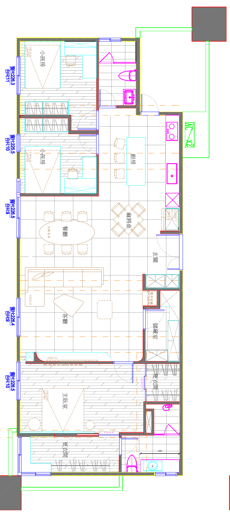

以整屋視角，探索每一處生活空間。
包含廚房旁陽台，以及更衣間外側轉角陽台。

整屋鳥瞰拖曳旋轉、滾輪縮放；手機雙指縮放及平移。
室內漫遊點選空間直接抵達。電腦使用 WASD 或方向鍵移動，拖曳轉頭；也可鎖定滑鼠視角。手機使用左下搖桿移動、右側畫面滑動轉頭。
陽台與衛浴出入口保持開放，可直接走入。牆面有碰撞限制；鳥瞰會隱藏天花板。
輕量光照使用天空環境光、日光與快取陰影。靜止時停止重繪，不會在背景持續計算光線。
配置依提供的左圖；層高 3.0m、家具樣式、欄杆及裝修為示意。細部尺寸需以現場丈量為準。
四組完整配色，連動櫃體與軟裝。淡色長條木地板保留。
準備光線與材質…